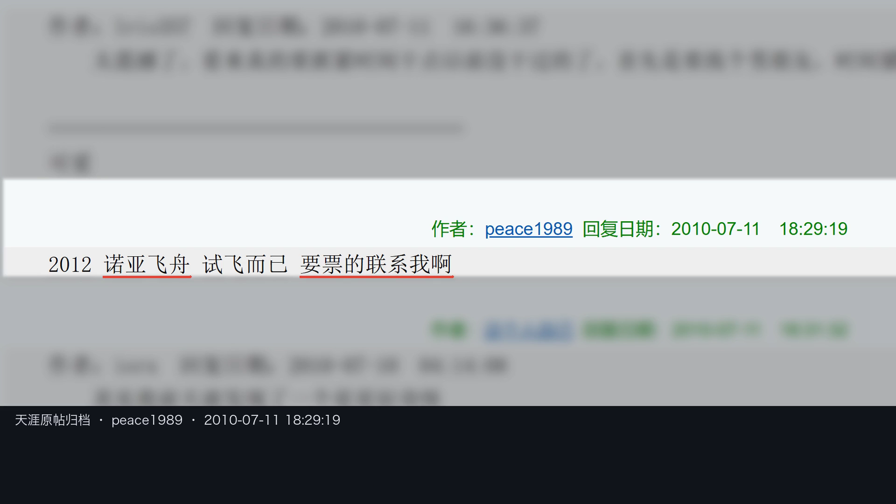

29.36秒：笑评 → 机场情境 → 私人飞机留言 → 央视原文 → 追查问题。切换版本会保留当前播放位置。
新版本重制首镜的全幅构图、实音划线与单一来源栏，按原片样式重新合成字幕和水印；其余7段沿用已迁入的原采用画面。原旁白保留，开场音乐按原音符和跨章音乐桥在本地重建，合成前29.36秒PCM逐样本一致。不是重新生成全部画面，也不是新一期成片。
原片完整帧率25fps；切出的参考段封装可能带有极短编码尾部，比较限于29.36秒。同画面参数对照不等于自动证明所有新题的审美质量。
打开双版本播放器与章节 · 网页取证与动作范例 · 返回工作室